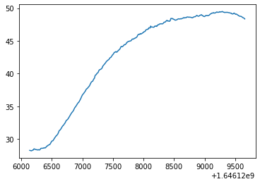

Python Basics (2023-11-29 - 2023-12-01)¶
blah blah
[1]:
print('hello world')
hello world
[2]:
a = 42
[3]:
if a == 42:
print('the answer')
the answer
BlahBlah¶
[4]:
del a
[5]:
a = 42
[6]:
print(a)
42
[7]:
a
[7]:
42
[8]:
type(a)
[8]:
int
[9]:
print(type(a))
<class 'int'>
[10]:
i = 100
[11]:
hex(i)
[11]:
'0x64'
[12]:
bin(i)
[12]:
'0b1100100'
[13]:
i = 300
[14]:
bin(i)
[14]:
'0b100101100'
[15]:
i = 1
[16]:
bin(i)
[16]:
'0b1'
[17]:
bin(0)
[17]:
'0b0'
[18]:
i = 2**64 - 1
[19]:
bin(i)
[19]:
'0b1111111111111111111111111111111111111111111111111111111111111111'
[20]:
len(bin(i))
[20]:
66
[21]:
i += 1
[22]:
i
[22]:
18446744073709551616
[23]:
len(bin(i))
[23]:
67
[24]:
2**10000
[24]:
19950631168807583848837421626835850838234968318861924548520089498529438830221946631919961684036194597899331129423209124271556491349413781117593785932096323957855730046793794526765246551266059895520550086918193311542508608460618104685509074866089624888090489894838009253941633257850621568309473902556912388065225096643874441046759871626985453222868538161694315775629640762836880760732228535091641476183956381458969463899410840960536267821064621427333394036525565649530603142680234969400335934316651459297773279665775606172582031407994198179607378245683762280037302885487251900834464581454650557929601414833921615734588139257095379769119277800826957735674444123062018757836325502728323789270710373802866393031428133241401624195671690574061419654342324638801248856147305207431992259611796250130992860241708340807605932320161268492288496255841312844061536738951487114256315111089745514203313820202931640957596464756010405845841566072044962867016515061920631004186422275908670900574606417856951911456055068251250406007519842261898059237118054444788072906395242548339221982707404473162376760846613033778706039803413197133493654622700563169937455508241780972810983291314403571877524768509857276937926433221599399876886660808368837838027643282775172273657572744784112294389733810861607423253291974813120197604178281965697475898164531258434135959862784130128185406283476649088690521047580882615823961985770122407044330583075869039319604603404973156583208672105913300903752823415539745394397715257455290510212310947321610753474825740775273986348298498340756937955646638621874569499279016572103701364433135817214311791398222983845847334440270964182851005072927748364550578634501100852987812389473928699540834346158807043959118985815145779177143619698728131459483783202081474982171858011389071228250905826817436220577475921417653715687725614904582904992461028630081535583308130101987675856234343538955409175623400844887526162643568648833519463720377293240094456246923254350400678027273837755376406726898636241037491410966718557050759098100246789880178271925953381282421954028302759408448955014676668389697996886241636313376393903373455801407636741877711055384225739499110186468219696581651485130494222369947714763069155468217682876200362777257723781365331611196811280792669481887201298643660768551639860534602297871557517947385246369446923087894265948217008051120322365496288169035739121368338393591756418733850510970271613915439590991598154654417336311656936031122249937969999226781732358023111862644575299135758175008199839236284615249881088960232244362173771618086357015468484058622329792853875623486556440536962622018963571028812361567512543338303270029097668650568557157505516727518899194129711337690149916181315171544007728650573189557450920330185304847113818315407324053319038462084036421763703911550639789000742853672196280903477974533320468368795868580237952218629120080742819551317948157624448298518461509704888027274721574688131594750409732115080498190455803416826949787141316063210686391511681774304792596709376
[25]:
type(i)
[25]:
int
[26]:
type_of_i = type(i)
[27]:
print(type_of_i)
<class 'int'>
[28]:
msg = 'hello world'
print(msg)
hello world
[29]:
type(msg)
[29]:
str
[30]:
type(print)
[30]:
builtin_function_or_method
[31]:
type(i)
[31]:
int
[32]:
i = ['abc', 1, 666.42]
[33]:
type(i)
[33]:
list
Syntax¶
[34]:
answer = 666
[35]:
if answer == 42:
print('yay')
print('das ist mal eine antwort')
else:
print('schade')
schade
[36]:
if answer == 42:
print('yay')
print('das ist mal eine antwort')
das ist mal eine antwort
Variables¶
[37]:
msg = 'hello world'
[38]:
print(msg)
hello world
[39]:
print(msg*2)
hello worldhello world
[40]:
i = 0
while i < 7:
print(i)
i += 1
0
1
2
3
4
5
6
[41]:
a = 42
[42]:
type(a)
[42]:
int
[43]:
a = 1.5
[44]:
type(a)
[44]:
float
[45]:
a = [42, 'blah']
[46]:
type(a)
[46]:
list
[47]:
a = 42
[48]:
b = a
[49]:
a
[49]:
42
[50]:
b
[50]:
42
[51]:
id(a)
[51]:
140572055569936
[52]:
id(b)
[52]:
140572055569936
[53]:
a = 7
[54]:
a
[54]:
7
[55]:
b
[55]:
42
[56]:
c = b
[57]:
b += 1
[58]:
b
[58]:
43
[59]:
c
[59]:
42
[60]:
l1 = [1, 'two']
[61]:
l2 = l1
[62]:
id(l1) == id(l2)
[62]:
True
[63]:
l1 is l2
[63]:
True
[64]:
l1.append(3.0)
[65]:
l1
[65]:
[1, 'two', 3.0]
[66]:
l2
[66]:
[1, 'two', 3.0]
[67]:
l3 = [1, 'two']
[68]:
l1 == l3
[68]:
False
[69]:
l1 is l3
[69]:
False
DataTypes¶
What is Equality? (==)
[70]:
a = '666'
[71]:
b = 666
[72]:
a == b
[72]:
False
[73]:
int(a) == b
[73]:
True
Integers¶
[74]:
3/2
[74]:
1.5
[75]:
3//2
[75]:
1
[76]:
import math
[77]:
math.sqrt(4)
[77]:
2.0
[78]:
round(4.500001)
[78]:
5
[79]:
help(round)
Help on built-in function round in module builtins:
round(number, ndigits=None)
Round a number to a given precision in decimal digits.
The return value is an integer if ndigits is omitted or None. Otherwise
the return value has the same type as the number. ndigits may be negative.
[80]:
round(4.65, 0)
[80]:
5.0
[81]:
6/3 == 100/50
[81]:
True
[82]:
if abs(6/3 - 100/50) < 0.001:
print('eh gleich')
eh gleich
[83]:
round(3.499999999999999999999999)
[83]:
4
[84]:
round(4.4999)
[84]:
4
[85]:
def my_round(f):
import math
cf = math.ceil(f)
diff_to_next = cf - f
if diff_to_next <0.5001:
return cf
else:
return math.floor(f)
[86]:
my_round(3.5)
[86]:
4
[87]:
my_round(3.1)
[87]:
3
[88]:
my_round(3.6)
[88]:
4
[89]:
my_round(3.500000001)
[89]:
4
Datatype Conversions¶
[90]:
str_i = "666"
[91]:
type(str_i)
[91]:
str
[92]:
int_i = int(str_i)
[93]:
type(int_i)
[93]:
int
[94]:
int_i == str_i
[94]:
False
[95]:
str(int_i)
[95]:
'666'
[96]:
float_i = float(int_i)
[97]:
float_i
[97]:
666.0
[98]:
float('666')
[98]:
666.0
[99]:
try:
float('abc')
except Exception as e:
print(type(e), e)
<class 'ValueError'> could not convert string to float: 'abc'
[100]:
try:
int('666.42')
except Exception as e:
print(type(e), e)
<class 'ValueError'> invalid literal for int() with base 10: '666.42'
[101]:
try:
int('abc')
except Exception as e:
print(type(e), e)
<class 'ValueError'> invalid literal for int() with base 10: 'abc'
[102]:
int('abc', 16)
[102]:
2748
[103]:
bool(666)
[103]:
True
[104]:
bool(0)
[104]:
False
[105]:
bool('666')
[105]:
True
[106]:
i = 666
if i:
print('eh')
eh
[107]:
i = 0
if not i:
print('nix')
nix
List (mutable)¶
[108]:
l = [1, 'two', 3.0]
[109]:
type(l)
[109]:
list
[110]:
l.append(4)
[111]:
l
[111]:
[1, 'two', 3.0, 4]
[112]:
nocheineliste = [5, 6, 7]
[113]:
l += nocheineliste
[114]:
l
[114]:
[1, 'two', 3.0, 4, 5, 6, 7]
[115]:
l.extend([8, 9, 10])
l
[115]:
[1, 'two', 3.0, 4, 5, 6, 7, 8, 9, 10]
[116]:
l[3]
[116]:
4
[117]:
l.append([11, 12, 13])
[118]:
l
[118]:
[1, 'two', 3.0, 4, 5, 6, 7, 8, 9, 10, [11, 12, 13]]
[119]:
len(l)
[119]:
11
[120]:
666 in l
[120]:
False
[121]:
12 in l
[121]:
False
[122]:
12 == [11, 12, 13]
[122]:
False
[123]:
12 in l[-1]
[123]:
True
Tuple (immutable)¶
[124]:
t = (1, 'two', 3.0)
id(t)
[124]:
140571746172800
[125]:
type(t)
[125]:
tuple
[126]:
try:
t.append(4)
except Exception as e:
print(type(e), e)
<class 'AttributeError'> 'tuple' object has no attribute 'append'
[127]:
t += (4, 5, 6)
[128]:
id(t)
[128]:
140571753417312
[129]:
t[3]
[129]:
4
[130]:
t = (666)
[131]:
type(t)
[131]:
int
[132]:
2*3+4
[132]:
10
[133]:
2*(3+4)
[133]:
14
[134]:
t = (666,)
[135]:
type(t)
[135]:
tuple
Dictionary (mutable)¶
[136]:
d = {
'one': 1,
'two': 2,
}
[137]:
d['one']
[137]:
1
[138]:
'one' in d
[138]:
True
[139]:
try:
d['three']
except Exception as e:
print(type(e), e)
<class 'KeyError'> 'three'
[140]:
d['three'] = 3
[141]:
d['three']
[141]:
3
[142]:
v = d.get('four')
[143]:
print(v)
None
[144]:
d.get('three')
[144]:
3
[145]:
del d['three']
[146]:
'three' in d
[146]:
False
Set (mutable)¶
[147]:
s = {1, 2, 3}
[148]:
3 in s
[148]:
True
[149]:
4 not in s
[149]:
True
[150]:
s.add(4)
[151]:
s
[151]:
{1, 2, 3, 4}
[152]:
s.add(4)
[153]:
s
[153]:
{1, 2, 3, 4}
[154]:
s.remove(1)
[155]:
1 in s
[155]:
False
[156]:
s1 = {1, 2, 3, 4}
s2 = {3, 4, 5, 6}
[157]:
s1 | s2
[157]:
{1, 2, 3, 4, 5, 6}
[158]:
s1 & s2
[158]:
{3, 4}
[159]:
s1 ^ s2
[159]:
{1, 2, 5, 6}
[160]:
i = 42
i.__hash__()
[160]:
42
[161]:
my_s = 'abc'
my_s.__hash__()
[161]:
-2282548071841868421
[162]:
s.add('abc')
[163]:
s
[163]:
{2, 3, 4, 'abc'}
[164]:
try:
s.add([1, 2, 3])
except Exception as e:
print(type(e), e)
<class 'TypeError'> unhashable type: 'list'
[165]:
s.add((1,2,3))
Boolean (immutable)¶
[166]:
1 < 2
[166]:
True
[167]:
2 < 1
[167]:
False
[168]:
i = 0
while i < 7:
print(i)
i += 1
0
1
2
3
4
5
6
[169]:
bool(42)
[169]:
True
[170]:
bool(0)
[170]:
False
[171]:
bool('')
[171]:
False
[172]:
bool('0')
[172]:
True
[173]:
bool(None)
[173]:
False
[174]:
a = 42
[175]:
if a == 42:
print('yay')
else:
print('oioi')
yay
[176]:
True and False
[176]:
False
[177]:
True or False
[177]:
True
[178]:
False or True
[178]:
True
[179]:
True or False and print('boah')
[179]:
True
while Loops¶
[180]:
i = 0
while i < 7:
print(i)
i += 1
print('ueberbleibsel', i)
0
1
2
3
4
5
6
ueberbleibsel 7
[183]:
my_sum = 0
i = 0
while i < 101:
my_sum += i
i += 1
print(my_sum)
5050
[26]:
sum(range(101)) # pythonic
[26]:
5050
[1]:
import random
[29]:
n_tries = 5
while n_tries != 0:
n_tries -= 1
eyes = random.randrange(1, 7)
if eyes == 6:
print('win')
break
else:
print('lose')
win
for Loops¶
[81]:
i = 0
while i < 5:
print(i)
i += 1
0
1
2
3
4
[82]:
for i in range(0, 5):
print(i)
0
1
2
3
4
[77]:
for i in range(0, 5, 2):
print(i)
0
2
4
[78]:
for i in range(2, 10):
print(i)
2
3
4
5
6
7
8
9
[39]:
l = [0, 1, 2, 3, 4]
for i in l:
print(i)
0
1
2
3
4
[41]:
s = {0, 1, 2, 3, 4}
for i in s:
print(i)
0
1
2
3
4
[43]:
d = {'one': 1, 'two': 2}
for elem in d:
print(elem)
one
two
[46]:
d = {'one': 1, 'two': 2}
for elem in d.keys():
print(elem)
one
two
[48]:
for elem in d.values():
print(elem)
1
2
[50]:
for elem in d.items():
print(elem)
('one', 1)
('two', 2)
Tuple Unpacking¶
[52]:
for elem in d.items():
k = elem[0]
v = elem[1]
print('key:', k, 'value:', v)
key: one value: 1
key: two value: 2
[53]:
for k, v in d.items():
print('key:', k, 'value:', v)
key: one value: 1
key: two value: 2
[54]:
l = ['one', 2, 3.0]
[79]:
a, b, c = l
[57]:
print(a, b, c)
one 2 3.0
[58]:
a = 1
b = 2
Exchange values of a and b!
[59]:
tmp = a
a = b
b = tmp
[60]:
print(a, b)
2 1
[61]:
a = 1
b = 2
[62]:
a, b = b, a
[63]:
print(a, b)
2 1
[71]:
def f():
return 42, 666
[73]:
answer, doom = f()
[83]:
answer, doom
[83]:
(42, 666)
Iterator Protocol¶
[91]:
r = range(3)
type(r)
[91]:
range
[86]:
l = [0, 1, 2]
type(l)
[86]:
list
[88]:
for elem in l:
print(elem)
0
1
2
[90]:
for elem in r:
print(elem)
0
1
2
[92]:
l
[92]:
[0, 1, 2]
[94]:
it = iter(l)
type(it)
[94]:
list_iterator
[95]:
next(it)
[95]:
0
[96]:
next(it)
[96]:
1
[97]:
next(it)
[97]:
2
[99]:
try:
next(it)
except Exception as e:
print(type(e), e)
<class 'StopIteration'>
[100]:
for elem in l:
print(elem)
0
1
2
[101]:
r = range(3)
type(r)
[101]:
range
[102]:
it = iter(r)
[103]:
next(it)
[103]:
0
[104]:
next(it)
[104]:
1
[105]:
next(it)
[105]:
2
[107]:
try:
next(it)
except Exception as e:
print(type(e), e)
<class 'StopIteration'>
[115]:
def my_range(stop):
print('start')
run = 0
while run < stop:
print('before yield', run)
yield run
print('after yield', run)
run += 1
print('stop iteration')
[117]:
r = my_range(3)
[118]:
r
[118]:
<generator object my_range at 0x7f48e8543060>
[119]:
it = iter(r)
[120]:
next(it)
start
before yield 0
[120]:
0
[121]:
next(it)
after yield 0
before yield 1
[121]:
1
[122]:
next(it)
after yield 1
before yield 2
[122]:
2
[124]:
try:
next(it)
except Exception as e:
print(type(e), e)
<class 'StopIteration'>
[125]:
def wurscht():
yield 0
yield 'doedel'
yield 666.42
[126]:
for elem in wurscht():
print(elem)
0
doedel
666.42
Functions¶
[134]:
def is_even(n):
if n % 2 == 0:
return True
else:
return False
[135]:
is_even(100)
[135]:
True
[136]:
is_even(99)
[136]:
False
Sequential Datatypes¶
[137]:
s = 'abc'
[138]:
for c in s:
print(c)
a
b
c
[140]:
s[0]
[140]:
'a'
[141]:
s[2]
[141]:
'c'
[142]:
s[1]
[142]:
'b'
More About Strings¶
[143]:
s = 'blah'
[144]:
s
[144]:
'blah'
[145]:
'blah'
[145]:
'blah'
[146]:
'doesn\'t'
[146]:
"doesn't"
[148]:
"doesn't"
[148]:
"doesn't"
[149]:
"sdhcbdhcb'kjsdskbh\"akjsdhvksb"
[149]:
'sdhcbdhcb\'kjsdskbh"akjsdhvksb'
[151]:
s = "abc\ndef"
print(s)
abc
def
[152]:
path = 'C:\some\name'
[153]:
print(path)
C:\some
ame
[154]:
path = 'C:\some\\name'
[155]:
print(path)
C:\some\name
[156]:
path = r'C:\some\name'
[157]:
print(path)
C:\some\name
Regular Expressions¶
Potschert …
[162]:
line = " blah . 1234 \n"
[164]:
item1, item2 = line.split('.')
[165]:
item1, item2
[165]:
(' blah ', ' 1234 \n')
[166]:
item1 = item1.strip()
item1
[166]:
'blah'
[168]:
int(item2.strip())
[168]:
1234
Gscheit …
[169]:
import re
[162]:
line = " blah . 1234 \n"
[182]:
line_re = re.compile(r"^\s*(\S+)\s*\.\s*(\d+)\s*$")
[183]:
match = line_re.search(line)
[184]:
type(match)
[184]:
re.Match
[185]:
match.group(1)
[185]:
'blah'
[186]:
match.group(2)
[186]:
'1234'
Multiline Strings¶
[194]:
def foo(bar):
'''This complex function foos a bar by
concatenating bar to itself a thousand times'''
return bar*5
[195]:
foo('abc')
[195]:
'abcabcabcabcabc'
[196]:
help(foo)
Help on function foo in module __main__:
foo(bar)
This complex function foos a bar by
concatenating bar to itself a thousand times
[197]:
foo.__doc__
[197]:
'This complex function foos a bar by\n concatenating bar to itself a thousand times'
f-Strings¶
[198]:
a = 1
[199]:
f'blah {a} blah'
[199]:
'blah 1 blah'
[200]:
'%d %s' % (666, 'blah')
[200]:
'666 blah'
[201]:
'{0} {1}'.format(666, 'blah')
[201]:
'666 blah'
[203]:
i = 666
blah = 'blah'
f'{i} {blah}'
[203]:
'666 blah'
[204]:
f'{665+1} {"bla"+"h"}'
[204]:
'666 blah'
Miscellaneous String Methods¶
[205]:
' \n\t '.isspace()
[205]:
True
[206]:
'abc'.isalpha()
[206]:
True
[207]:
s = 'mississippi'
[208]:
s.count('ss')
[208]:
2
[210]:
import os
os.listdir('.')
[210]:
['.ipynb_checkpoints',
'notebook-wrapper.rst',
'notebook.ipynb',
'agenda.rst.~1~',
'index.rst.~1~',
'index.rst',
'agenda.rst.~2~',
'agenda.rst']
[211]:
filename = 'data.csv'
[212]:
filename.endswith('.csv')
[212]:
True
[213]:
s = 'mississippi'
[214]:
s.count('ss')
[214]:
2
[215]:
s.find('ss')
[215]:
2
[216]:
pos = s.find('ss')
[217]:
pos
[217]:
2
[218]:
s.find('ss', pos + 1)
[218]:
5
[219]:
s.find('xx')
[219]:
-1
[220]:
s.index('ss')
[220]:
2
[222]:
try:
s.index('xx')
except Exception as e:
print(type(e), e)
<class 'ValueError'> substring not found
split() and join()¶
[223]:
line = 'one:two:three'
[224]:
line.split(':')
[224]:
['one', 'two', 'three']
[227]:
a, b, c = line.split(':')
[228]:
a, b, c
[228]:
('one', 'two', 'three')
[229]:
items = ['one', 'two', 'three']
[230]:
':'.join(items)
[230]:
'one:two:three'
[231]:
line
[231]:
'one:two:three'
[232]:
line.split(':', 1)
[232]:
['one', 'two:three']
[233]:
dict([(1, 'one'), (2, 'two')])
[233]:
{1: 'one', 2: 'two'}
[234]:
'blah'.center(80)
[234]:
' blah '
[236]:
'xxx\tyyy'.expandtabs()
[236]:
'xxx yyy'
More About Lists¶
[237]:
l = [4, 2, 3.6]
[238]:
l.sort()
[239]:
l
[239]:
[2, 3.6, 4]
[240]:
l = [2, 'eins']
[242]:
try:
l.sort()
except Exception as e:
print(type(e), e)
<class 'TypeError'> '<' not supported between instances of 'str' and 'int'
[243]:
l = [2, 1, 3, 7, 4]
[244]:
l.sort(reverse=True)
[245]:
l
[245]:
[7, 4, 3, 2, 1]
[246]:
l.reverse()
[247]:
l
[247]:
[1, 2, 3, 4, 7]
[248]:
[i**2 for i in l]
[248]:
[1, 4, 9, 16, 49]
More About Dictionaries¶
[249]:
d = {'one': 1, 'two': 2}
[250]:
d['one']
[250]:
1
[252]:
if 'three' in d:
v = d['three']
else:
v = 3
v
[252]:
3
[256]:
v = d.get('three', 3)
[257]:
print(v)
3
[262]:
if 'three' in d:
v = d['three']
else:
d['three'] = 3
v = d['three']
[260]:
del d['three']
[264]:
d.setdefault('three', 3)
[264]:
3
Pythonicity (enumerate())¶
[265]:
l = ['Joerg', 'Caro', 'Johanna', 'Philipp']
[268]:
lineno = 0
for name in l:
print(lineno, name)
lineno += 1
0 Joerg
1 Caro
2 Johanna
3 Philipp
[270]:
for elem in enumerate(l):
print(elem)
(0, 'Joerg')
(1, 'Caro')
(2, 'Johanna')
(3, 'Philipp')
[271]:
for lineno, name in enumerate(l):
print(lineno, name)
0 Joerg
1 Caro
2 Johanna
3 Philipp
pandas, matplotlib¶
[273]:
import pandas
[277]:
df = pandas.read_csv('data.csv', encoding='utf-16', delimiter='\t')
[278]:
df
[278]:
| Scan | Zeit | 101 <MP_left 1> (C) | 102 <MP_left 2> (C) | 103 <MP_left 3> (C) | 104 <MP_top> (C) | 105 <MP_right 1> (C) | 106 <MP_righ 2> (C) | 107 <MP_righ 3> (C) | 108 <Brenner Kupfer> (C) | 109 <Brenner Messing> (C) | 110 <Koax Oberflaeche 15> (C) | 111 <Koax Oberflaeche 100> (C) | 112 <Gasduese> (C) | 113 <FSC Koax 15> (C) | 114 <FSC> (C) | 115 <Zellentemp> (C) | 117 <Raumtemp> (C) | 120 <strom> (VDC) | |
|---|---|---|---|---|---|---|---|---|---|---|---|---|---|---|---|---|---|---|---|
| 0 | 1 | 01.03.2022 10:15:38 | 28.540 | 28.274 | 29.077 | 28.347 | 28.877 | 28.811 | 29.313 | 32.090 | 31.883 | 28.746 | 27.609 | 23.437 | 24.716 | 30.500 | 23.288 | 21.219 | 3.76220 |
| 1 | 2 | 01.03.2022 10:15:48 | 28.529 | 28.260 | 29.045 | 28.299 | 28.828 | 28.770 | 29.273 | 31.964 | 31.771 | 28.768 | 27.668 | 24.459 | 24.695 | 30.465 | 23.476 | 21.173 | 3.77849 |
| 2 | 3 | 01.03.2022 10:15:58 | 28.476 | 28.220 | 28.994 | 28.264 | 28.812 | 28.727 | 29.198 | 31.887 | 31.655 | 28.671 | 27.537 | 24.225 | 24.681 | 30.433 | 23.482 | 21.086 | 3.81216 |
| 3 | 4 | 01.03.2022 10:16:08 | 28.465 | 28.209 | 28.935 | 28.210 | 28.788 | 28.706 | 29.126 | 31.774 | 31.540 | 28.615 | 27.411 | 23.552 | 24.657 | 30.409 | 23.278 | 21.154 | 3.99354 |
| 4 | 5 | 01.03.2022 10:16:18 | 28.556 | 28.255 | 28.940 | 28.178 | 28.922 | 28.816 | 29.327 | 32.300 | 32.371 | 28.553 | 27.445 | 317.346 | 24.697 | 30.511 | 30.591 | 21.116 | 373.92051 |
| ... | ... | ... | ... | ... | ... | ... | ... | ... | ... | ... | ... | ... | ... | ... | ... | ... | ... | ... | ... |
| 348 | 349 | 01.03.2022 11:13:38 | 50.115 | 48.607 | 51.650 | 45.000 | 50.949 | 51.040 | 53.544 | 87.077 | 92.665 | 51.471 | 45.354 | 26.299 | 33.918 | 40.816 | 23.035 | 20.946 | 4.82874 |
| 349 | 350 | 01.03.2022 11:13:48 | 49.994 | 48.545 | 51.467 | 44.949 | 50.939 | 51.011 | 53.431 | 86.591 | 92.075 | 51.297 | 45.141 | 58.909 | 33.804 | 40.777 | 23.006 | 20.926 | 4.78855 |
| 350 | 351 | 01.03.2022 11:13:58 | 49.933 | 48.510 | 51.395 | 44.929 | 50.898 | 50.971 | 53.314 | 86.098 | 91.442 | 51.036 | 45.007 | 181.211 | 33.701 | 40.716 | 22.991 | 20.991 | 4.76466 |
| 351 | 352 | 01.03.2022 11:14:08 | 49.967 | 48.447 | 51.422 | 44.881 | 50.816 | 50.869 | 52.862 | 85.583 | 90.813 | 50.839 | 44.909 | 2.091 | 33.706 | 40.655 | 22.921 | 21.010 | 4.64736 |
| 352 | 353 | 01.03.2022 11:14:18 | 49.812 | 48.352 | 51.316 | 44.781 | 50.680 | 50.827 | 52.941 | 85.118 | 90.164 | 50.844 | 44.964 | -124.132 | 33.483 | 40.594 | 23.259 | 20.891 | 4.65062 |
353 rows × 19 columns
[284]:
timestamps = df['Zeit']
[289]:
timestamps
[289]:
0 01.03.2022 10:15:38
1 01.03.2022 10:15:48
2 01.03.2022 10:15:58
3 01.03.2022 10:16:08
4 01.03.2022 10:16:18
...
348 01.03.2022 11:13:38
349 01.03.2022 11:13:48
350 01.03.2022 11:13:58
351 01.03.2022 11:14:08
352 01.03.2022 11:14:18
Name: Zeit, Length: 353, dtype: object
[291]:
type(timestamps)
[291]:
pandas.core.series.Series
[281]:
from datetime import datetime
[287]:
def transform_ts(ts):
dt = datetime.strptime(ts, '%d.%m.%Y %H:%M:%S')
return dt.timestamp()
[298]:
transformed_timestamps = timestamps.apply(transform_ts)
[299]:
transformed_timestamps
[299]:
0 1.646126e+09
1 1.646126e+09
2 1.646126e+09
3 1.646126e+09
4 1.646126e+09
...
348 1.646130e+09
349 1.646130e+09
350 1.646130e+09
351 1.646130e+09
352 1.646130e+09
Name: Zeit, Length: 353, dtype: float64
[300]:
df['Zeit'] = transformed_timestamps
[303]:
df
[303]:
| Scan | Zeit | 101 <MP_left 1> (C) | 102 <MP_left 2> (C) | 103 <MP_left 3> (C) | 104 <MP_top> (C) | 105 <MP_right 1> (C) | 106 <MP_righ 2> (C) | 107 <MP_righ 3> (C) | 108 <Brenner Kupfer> (C) | 109 <Brenner Messing> (C) | 110 <Koax Oberflaeche 15> (C) | 111 <Koax Oberflaeche 100> (C) | 112 <Gasduese> (C) | 113 <FSC Koax 15> (C) | 114 <FSC> (C) | 115 <Zellentemp> (C) | 117 <Raumtemp> (C) | 120 <strom> (VDC) | |
|---|---|---|---|---|---|---|---|---|---|---|---|---|---|---|---|---|---|---|---|
| 0 | 1 | 1.646126e+09 | 28.540 | 28.274 | 29.077 | 28.347 | 28.877 | 28.811 | 29.313 | 32.090 | 31.883 | 28.746 | 27.609 | 23.437 | 24.716 | 30.500 | 23.288 | 21.219 | 3.76220 |
| 1 | 2 | 1.646126e+09 | 28.529 | 28.260 | 29.045 | 28.299 | 28.828 | 28.770 | 29.273 | 31.964 | 31.771 | 28.768 | 27.668 | 24.459 | 24.695 | 30.465 | 23.476 | 21.173 | 3.77849 |
| 2 | 3 | 1.646126e+09 | 28.476 | 28.220 | 28.994 | 28.264 | 28.812 | 28.727 | 29.198 | 31.887 | 31.655 | 28.671 | 27.537 | 24.225 | 24.681 | 30.433 | 23.482 | 21.086 | 3.81216 |
| 3 | 4 | 1.646126e+09 | 28.465 | 28.209 | 28.935 | 28.210 | 28.788 | 28.706 | 29.126 | 31.774 | 31.540 | 28.615 | 27.411 | 23.552 | 24.657 | 30.409 | 23.278 | 21.154 | 3.99354 |
| 4 | 5 | 1.646126e+09 | 28.556 | 28.255 | 28.940 | 28.178 | 28.922 | 28.816 | 29.327 | 32.300 | 32.371 | 28.553 | 27.445 | 317.346 | 24.697 | 30.511 | 30.591 | 21.116 | 373.92051 |
| ... | ... | ... | ... | ... | ... | ... | ... | ... | ... | ... | ... | ... | ... | ... | ... | ... | ... | ... | ... |
| 348 | 349 | 1.646130e+09 | 50.115 | 48.607 | 51.650 | 45.000 | 50.949 | 51.040 | 53.544 | 87.077 | 92.665 | 51.471 | 45.354 | 26.299 | 33.918 | 40.816 | 23.035 | 20.946 | 4.82874 |
| 349 | 350 | 1.646130e+09 | 49.994 | 48.545 | 51.467 | 44.949 | 50.939 | 51.011 | 53.431 | 86.591 | 92.075 | 51.297 | 45.141 | 58.909 | 33.804 | 40.777 | 23.006 | 20.926 | 4.78855 |
| 350 | 351 | 1.646130e+09 | 49.933 | 48.510 | 51.395 | 44.929 | 50.898 | 50.971 | 53.314 | 86.098 | 91.442 | 51.036 | 45.007 | 181.211 | 33.701 | 40.716 | 22.991 | 20.991 | 4.76466 |
| 351 | 352 | 1.646130e+09 | 49.967 | 48.447 | 51.422 | 44.881 | 50.816 | 50.869 | 52.862 | 85.583 | 90.813 | 50.839 | 44.909 | 2.091 | 33.706 | 40.655 | 22.921 | 21.010 | 4.64736 |
| 352 | 353 | 1.646130e+09 | 49.812 | 48.352 | 51.316 | 44.781 | 50.680 | 50.827 | 52.941 | 85.118 | 90.164 | 50.844 | 44.964 | -124.132 | 33.483 | 40.594 | 23.259 | 20.891 | 4.65062 |
353 rows × 19 columns
[306]:
df.columns
[306]:
Index(['Scan', 'Zeit', '101 <MP_left 1> (C)', '102 <MP_left 2> (C)',
'103 <MP_left 3> (C)', '104 <MP_top> (C)', '105 <MP_right 1> (C)',
'106 <MP_righ 2> (C)', '107 <MP_righ 3> (C)',
'108 <Brenner Kupfer> (C)', '109 <Brenner Messing> (C)',
'110 <Koax Oberflaeche 15> (C)', '111 <Koax Oberflaeche 100> (C)',
'112 <Gasduese> (C)', '113 <FSC Koax 15> (C)', '114 <FSC> (C)',
'115 <Zellentemp> (C)', '117 <Raumtemp> (C)', '120 <strom> (VDC)'],
dtype='object')
[307]:
df[df.columns[2]]
[307]:
0 28.540
1 28.529
2 28.476
3 28.465
4 28.556
...
348 50.115
349 49.994
350 49.933
351 49.967
352 49.812
Name: 101 <MP_left 1> (C), Length: 353, dtype: float64
[308]:
timestamps = df[df.columns[1]]
[311]:
mpleft_1 = df[df.columns[2]]
[312]:
mpleft_2 = df[df.columns[3]]
[315]:
%matplotlib inline
[317]:
import matplotlib.pyplot as plt
[318]:
plt.plot(timestamps, mpleft_1)
[318]:
[<matplotlib.lines.Line2D at 0x7f48ab74abf0>]

[319]:
plt.plot(timestamps, mpleft_2)
[319]:
[<matplotlib.lines.Line2D at 0x7f48a96648b0>]

exec()¶
[322]:
code = 'print("hallo")'
[323]:
exec(code)
hallo
[324]:
code = '''
def add(l, r):
return l+r
'''
[325]:
exec(code)
[326]:
add(1, 2)
[326]:
3
[330]:
code = '''
eine_variable = 1
noch_eine_variable = 2
'''
[333]:
context = {}
[334]:
exec(code, context)
[335]:
context['eine_variable']
[335]:
1
[336]:
context['noch_eine_variable']
[336]:
2
Comprehensions (List, Dictionary, Set)¶
List Comprehension¶
[337]:
l = [0, 1, 2, 3, 4, 5]
[338]:
l = list(range(6))
[339]:
l
[339]:
[0, 1, 2, 3, 4, 5]
[340]:
squares = []
for i in l:
squares.append(i**2)
squares
[340]:
[0, 1, 4, 9, 16, 25]
[341]:
squares = [i**2 for i in l]
squares
[341]:
[0, 1, 4, 9, 16, 25]
[342]:
even_squares = [i**2 for i in l if i%2 == 0]
even_squares
[342]:
[0, 4, 16]
filter()¶
[344]:
l
[344]:
[0, 1, 2, 3, 4, 5]
[345]:
def even_pred(n):
return n%2 == 0
even = filter(even_pred, l)
[347]:
even
[347]:
<filter at 0x7f48a9505b40>
[348]:
for elem in even:
print(elem)
0
2
4
[349]:
even = [i for i in l if i%2 == 0]
[350]:
even
[350]:
[0, 2, 4]
Generator Expression¶
[351]:
even = (i for i in l if i%2 == 0)
[352]:
even
[352]:
<generator object <genexpr> at 0x7f48a95250e0>
[353]:
for elem in even:
print(elem)
0
2
4
Dictionary Comprehension¶
[354]:
l
[354]:
[0, 1, 2, 3, 4, 5]
dict i:i**2
[355]:
squaredict = {i: i**2 for i in l}
[357]:
squaredict
[357]:
{0: 0, 1: 1, 2: 4, 3: 9, 4: 16, 5: 25}
Set Comprehension¶
[358]:
squaresset = {i**2 for i in range(15)}
[359]:
squaresset
[359]:
{0, 1, 4, 9, 16, 25, 36, 49, 64, 81, 100, 121, 144, 169, 196}
zip(), And Dictionaries¶
[360]:
keys = ['one', 'two', 'three']
values = range(1,4)
[361]:
{k: v for k, v in zip(keys, values)}
[361]:
{'one': 1, 'two': 2, 'three': 3}
[362]:
for elem in zip(keys, values):
print(elem)
('one', 1)
('two', 2)
('three', 3)
[363]:
values = range(6)
[367]:
for elem in zip(keys, (v for i, v in enumerate(values) if i%2 == 0)):
print(elem)
('one', 0)
('two', 2)
('three', 4)
File IO¶
[368]:
f = open('/etc/passwd')
[369]:
f.read(10)
[369]:
'root:x:0:0'
[370]:
f.read(5)
[370]:
':root'
[371]:
f.close()
[375]:
with open('/etc/passwd') as f:
print(f.readline())
root:x:0:0:root:/root:/bin/bash
[376]:
f = open('/etc/passwd')
[377]:
f.readline()
[377]:
'root:x:0:0:root:/root:/bin/bash\n'
[378]:
f.readline()
[378]:
'bin:x:1:1:bin:/bin:/sbin/nologin\n'
[379]:
for line in f:
print(line)
daemon:x:2:2:daemon:/sbin:/sbin/nologin
adm:x:3:4:adm:/var/adm:/sbin/nologin
lp:x:4:7:lp:/var/spool/lpd:/sbin/nologin
sync:x:5:0:sync:/sbin:/bin/sync
shutdown:x:6:0:shutdown:/sbin:/sbin/shutdown
halt:x:7:0:halt:/sbin:/sbin/halt
mail:x:8:12:mail:/var/spool/mail:/sbin/nologin
operator:x:11:0:operator:/root:/sbin/nologin
games:x:12:100:games:/usr/games:/sbin/nologin
ftp:x:14:50:FTP User:/var/ftp:/sbin/nologin
nobody:x:65534:65534:Kernel Overflow User:/:/sbin/nologin
dbus:x:81:81:System message bus:/:/sbin/nologin
apache:x:48:48:Apache:/usr/share/httpd:/sbin/nologin
tss:x:59:59:Account used for TPM access:/dev/null:/sbin/nologin
systemd-network:x:192:192:systemd Network Management:/:/usr/sbin/nologin
systemd-oom:x:999:999:systemd Userspace OOM Killer:/:/usr/sbin/nologin
systemd-resolve:x:193:193:systemd Resolver:/:/usr/sbin/nologin
qemu:x:107:107:qemu user:/:/sbin/nologin
polkitd:x:998:997:User for polkitd:/:/sbin/nologin
avahi:x:70:70:Avahi mDNS/DNS-SD Stack:/var/run/avahi-daemon:/sbin/nologin
unbound:x:997:995:Unbound DNS resolver:/etc/unbound:/sbin/nologin
nm-openconnect:x:996:994:NetworkManager user for OpenConnect:/:/sbin/nologin
geoclue:x:995:993:User for geoclue:/var/lib/geoclue:/sbin/nologin
usbmuxd:x:113:113:usbmuxd user:/:/sbin/nologin
gluster:x:994:992:GlusterFS daemons:/run/gluster:/sbin/nologin
rtkit:x:172:172:RealtimeKit:/proc:/sbin/nologin
chrony:x:993:990::/var/lib/chrony:/sbin/nologin
saslauth:x:992:76:Saslauthd user:/run/saslauthd:/sbin/nologin
dnsmasq:x:991:989:Dnsmasq DHCP and DNS server:/var/lib/dnsmasq:/sbin/nologin
rpc:x:32:32:Rpcbind Daemon:/var/lib/rpcbind:/sbin/nologin
colord:x:990:988:User for colord:/var/lib/colord:/sbin/nologin
rpcuser:x:29:29:RPC Service User:/var/lib/nfs:/sbin/nologin
openvpn:x:989:987:OpenVPN:/etc/openvpn:/sbin/nologin
nm-openvpn:x:988:986:Default user for running openvpn spawned by NetworkManager:/:/sbin/nologin
pipewire:x:987:985:PipeWire System Daemon:/var/run/pipewire:/sbin/nologin
abrt:x:173:173::/etc/abrt:/sbin/nologin
flatpak:x:986:983:User for flatpak system helper:/:/sbin/nologin
gdm:x:42:42:GNOME Display Manager:/var/lib/gdm:/sbin/nologin
gnome-initial-setup:x:985:982::/run/gnome-initial-setup/:/sbin/nologin
vboxadd:x:984:1::/var/run/vboxadd:/sbin/nologin
sshd:x:74:74:Privilege-separated SSH:/usr/share/empty.sshd:/sbin/nologin
tcpdump:x:72:72::/:/sbin/nologin
jfasch:x:1000:1000:Jörg Faschingbauer:/home/jfasch:/bin/bash
systemd-coredump:x:978:978:systemd Core Dumper:/:/usr/sbin/nologin
systemd-timesync:x:977:977:systemd Time Synchronization:/:/usr/sbin/nologin
mosquitto:x:976:976:Mosquitto Broker:/etc/mosquitto:/sbin/nologin
[383]:
f = open('/etc/passwd', encoding='ascii')
[384]:
try:
f.read()
except Exception as e:
print(type(e), e)
<class 'UnicodeDecodeError'> 'ascii' codec can't decode byte 0xc3 in position 2440: ordinal not in range(128)